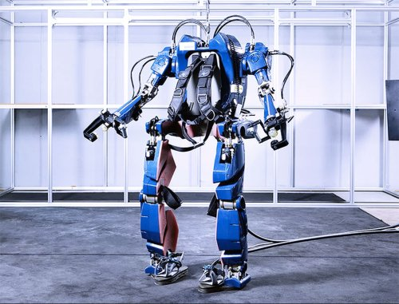

Экзоскелет Hal
|

|
Компания Hyundai
продемонстрировала вниманию общественности новый опытный образец
экзоскелета тяжелого класса, который можно назвать термином "одеваемый
робот". Этот экзоскелет, весьма похожий на то, что многим из нас
доводилось видеть в нескольких научно-фантастических фильмах, дает
человеку "нечеловеческую" силу и способность поднимать грузы, весом в
сотни килограмм, и его можно будет использовать в области промышленного
производства, в военном деле и в медицине для процедур восстановления
физического состояния человека.
|
|
Экзоскелет H-Lex
|

|
Новый экзоскелет является
продолжением разработки серии H-LEX (Hyundai Lifecaring ExoSkeleton),
представленной компанией в прошлом году. Первые экзоскелеты из этой
серии были более легкими и предназначались, в первую очередь, для
оказания помощи в движении пожилым людям и людям с физическими
отклонениями. К сожалению, большая часть информации относительно нового
экзоскелета, в том числе и технического плана, пока не была
опубликована компанией Hyundai, но, будем надеяться, что эта ситуация
будет исправлена в ближайшем времени.
|
|